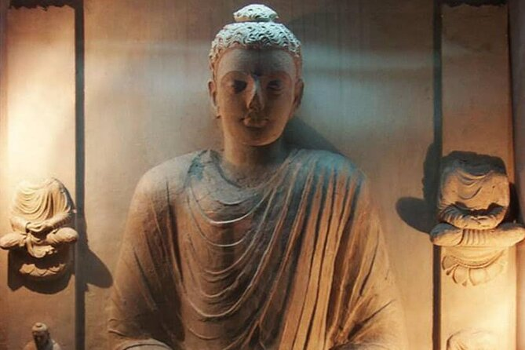

Our Story
How We
Began
Uncharted Travels was founded in 2010 by a group of Lahore-based historians, archaeologists, and travel professionals who shared a single frustration: Pakistan's remarkable heritage was invisible to the world.
The country held six UNESCO World Heritage Sites, one of the world's oldest urban civilisations, the finest Mughal architecture outside the Taj Mahal, and a Buddhist heritage of staggering depth — yet international tourism to historical sites was negligible.
We began with a single Taxila day tour for a group of foreign diplomats based in Islamabad. Word spread. Within two years we were operating full heritage circuits across Punjab, KPK, and Sindh. Today we are Pakistan's most comprehensive heritage travel company.
What Guides Us
Four Core
Values
Authentic Scholarship
Every fact we share is sourced from primary research, academic literature, and the expertise of our in-house historians and archaeologists.
Deep Respect
We operate in places of profound spiritual and cultural significance. We teach our guests to be respectful guests, not just visitors.
Community First
Seventy per cent of our team comes from the communities surrounding the sites we visit. Local expertise is the heart of everything we do.
Conservation Partnership
We contribute a portion of every booking to conservation projects at the sites we operate in. Heritage tourism should protect, not erode.
The People Behind the Journeys
Our
Team
Company Timeline
Our
Milestones
Recognised & Partnered With
Recognition
Awards &
Recognition
Our Commitment
Our Promise
to You
Every journey we design comes with guarantees we take personally.
- Expert historian or archaeologist on every multi-day tour
- All permits, entry fees, and site access arranged in advance
- 24/7 in-country support throughout your journey
- Fully flexible itineraries — we adapt to you, not the other way around
- A portion of every booking goes to heritage conservation

Ready to Begin Your
Pakistan Journey?
Tell us what you're dreaming of. Our team will build you an itinerary unlike anything you've experienced before.